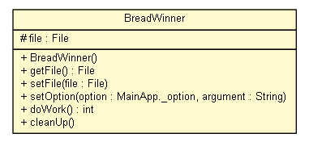

net.idea.examples.examples_maven
Class BreadWinner

java.lang.Object
 net.idea.examples.examples_maven.BreadWinner
net.idea.examples.examples_maven.BreadWinner
public class BreadWinner
- extends Object
The class that does the work.
- Author:
- nina
| Methods inherited from class java.lang.Object |
clone, equals, finalize, getClass, hashCode, notify, notifyAll, toString, wait, wait, wait |
file
protected File file
BreadWinner
public BreadWinner()
getFile
public File getFile()
- Returns:
setFile
public void setFile(File file)
- Parameters:
file -
setOption
public void setOption(net.idea.examples.examples_maven.MainApp._option option,
String argument)
throws Exception
- Parameters:
option - argument -
- Throws:
Exception
doWork
public int doWork()
throws Exception
- TODO Do something real here
- Returns:
-
- Throws:
Exception
cleanUp
public void cleanUp()
throws Exception
- TODO Close relevant resources
- Throws:
Exception
Copyright © 2012 IdeaConsult Ltd.. All Rights Reserved.